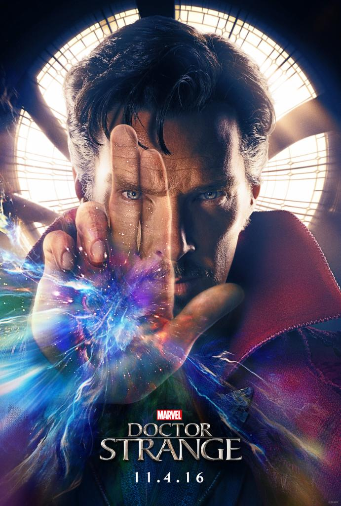

Russian, demanding, unbearable
|  |
Doctor Strange (2016)A former neurosurgeon embarks on a journey of healing only to be drawn into the world of the mystic arts. |
The Game (1997)Nicholas Van Orton is a very wealthy San Francisco banker, but he is an absolute loner, even spending his birthday alone. In the year of his 48th birthday (the age his father committed suicide) his brother Conrad, who has gone long ago and surrendered to addictions of all kinds, suddenly returns and gives Nicholas a card giving him entry to unusual entertainment provided by something called Consumer Recreation Services (CRS). Giving up to curiosity, Nicholas visits CRS and all kinds of weird and bad things start to happen to him. |
|
Despicable Me (2010)When a criminal mastermind uses a trio of orphan girls as pawns for a grand scheme, he finds their love is profoundly changing him for the better. |